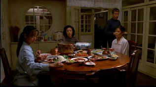

| Eat, Drink, Man, Woman/ B+,A- |
| MGM/1994/124/ANA 1.85 |
Eat, Drink, Man, Woman is a warmly
rendered tale of single father and three grown daughters living together
in a charming Taipei home. The father is Master Chef Chu, master chef of
Taipei’s famous Grand Hotel. Being a widow is not Chef Chu’s only
loss; he has also lost his sense of taste and the bitterness of his empty
palette has spread throughout the household. There are really four stories
here, seamlessly blended into a delicious film meal. Director Ang Lee
succeeds in recreating the world in which the Chu family lives and
effortlessly involves us in their stories.
 |
|
Sunday meal tradition. ©MGM
|
The use of food preparation and presentation
is a mouth-watering spectacle in itself. The film opens on Chef Chu’s
methodical preparation of the family’s Sunday dinner. Don’t,
absolutely do not think of seeing this movie on an empty stomach. The
array of exquisite dishes presented for his three daughters by Chu is
delightfully obsessive. Ang Lee has a grand eye for color. The film’s
bright lighting scheme enhances the colorful presentations. Lee’s
compositions, on plate or in film frame are equally pleasing.
There is a great helping of humor mixed in as the
family tries to sort out their various problems. The actors are all
equally pleasant to spend time around. Sihung Lung is terrific as the
master chef with the missing taste buds. When we’re not looking at
beautiful food, we can delight in the beauty of the three daughters. They
make a natural acting ensemble, relating to each other with authentic
sibling energy.
Characters authenticity makes Eat, Drink, Man, Woman a
rich, wonderfully prepared entertainment. The score embellishes the
themes with a delicate leitmotif. Production design has a wonderful
splattering of color is every scene adding to the visual splendor of Eat
Drink Man Woman. Locations for Eat, Drink, Man, Woman add a pretty
wrapping for the core material. Jong Lin delivers the glossy photography
chosen by Lee with flawless perfection.
The DVD is a blaze of beauty, from red peppers to
jumbo pink prawn. The excitement jumps off the screen with outstanding
light output and robust contrast ratio. Good deep blacks and fine shadow
detail. The Grand Hotel is a majestic sight against the night sky. The
entrance is simply breathtaking. Food preparation is astoundingly
beautiful both in color saturation and resolution. Dig those candy stripe
uniforms at Wendy's. The very sharp transfer delivers beautifully
rendered background details. You have to hunt down the slight hint of high
peak transition ringing. White English subtitles on the image are
removable. The titles sit almost a third of the way into the picture and
block more image than necessary. The visual feast is accompanied by a
clean, open, Dolby Digital 2 channel matrixed surround sound. A
fourteen minute short featuring an interview with Ang Lee.
The lovely transfer of Eat, Drink, Man, Woman
provides an unqualified delightful video repast. Mangia!
|
|
|
|

Selections from the Feature
Archive include articles on Akira Kurosawa, Blonde Bimbos, Frank Darabont, Steven Culp, John Herzfeld or Vietnam: The Hollywood Pariah, and many
more....
The Exquisite Muse of Zhang Yimou

The powerful image-making of Zhang Yimou has revealed itself in
virtually every film he has made. Coupled with his remarkable
collaboration with actress Gong Li, Zhang's has built a stunning body of
work Click the image to read all about it.

Ghost World/ A, A

Ghost World may be one of the finest movies about outsider I have
ever seen. Splendid work from Thora Birch and maybe the best Steve Buscemi
ever. A stunning transfer.

 Have you visited
Home Theater
Talk lately? One of the friendliest places on the Net for Home
Theater and DVD discussion, you can get help for installation problems or
simply share your opinions with other Vidiots. Have you visited
Home Theater
Talk lately? One of the friendliest places on the Net for Home
Theater and DVD discussion, you can get help for installation problems or
simply share your opinions with other Vidiots.
 Kinoeye Archive Kinoeye Archive
This is a resource of all content-rich materials on the web
relating to Central and East European cinema. The ultimate aim of the
Kinoeye Archive is to provide a near-as-damn-it definitive index of
intelligent and thoughtful English-language analysis of Central and
Eastern European cinema on the web.
Werner Herzog Film
![[ Werner Herzog ]](../images/werner-herzog.jpg)
The Web site of director Werner Herzog includes lots of great material. A
perfect stop for anyone who admires his films.
|